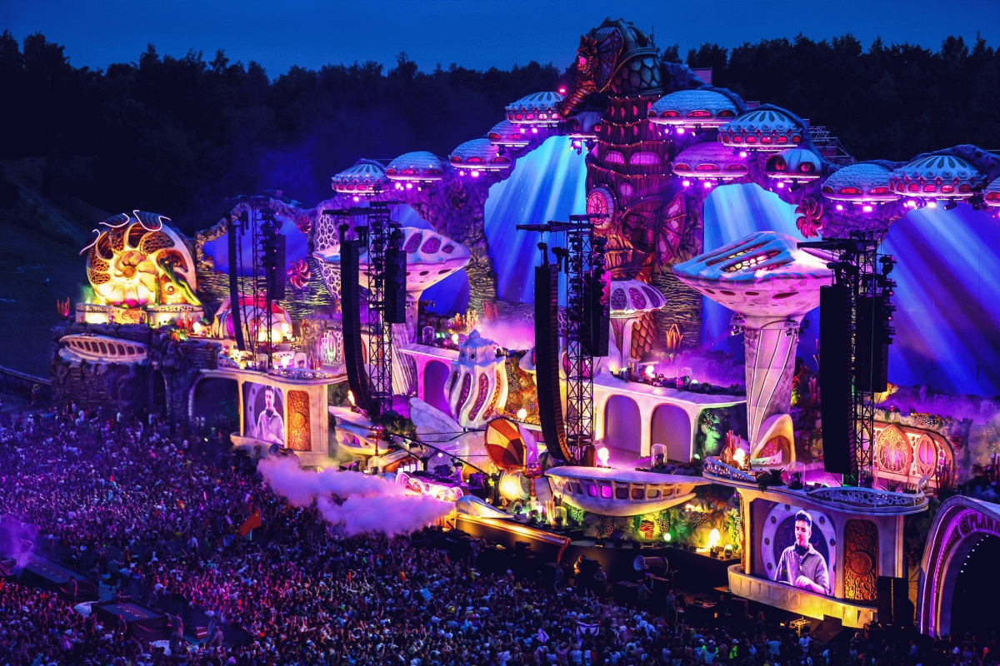
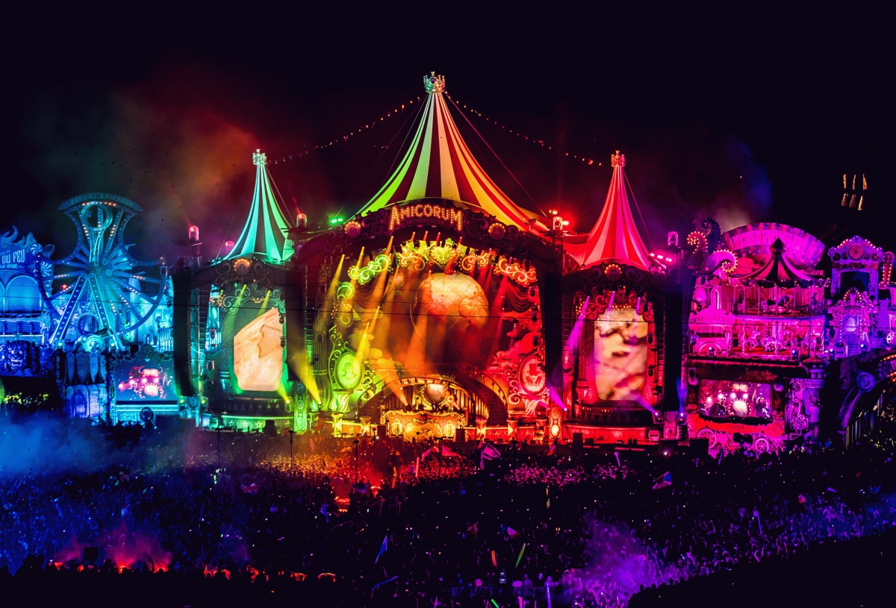

Tomorrowland es un festival de música electrónica de baile celebrado anualmente en la localidad de Boom. El festival es organizado por ID&T y se calcula que anualmente acuden más de 400.000 personas de casi 200 nacionalidades distintas. Es oficialmente el festival más grande del planeta.
La primera edición del festival se llevó a cabo el 13 de octubre de 2005. En ella actuaron Armin van Buuren y David Guetta entre otros. Es el festival de música electrónica mas grande del mundo, luego está Ultra Music Festival.
Tomorrowland (La tierra del mañana en español) los escenarios y el ambiente se encuentran rodeados de una decoración que simula un mundo de magia y fantasía. El festival en sí, ofrece una variedad de subgéneros dentro de la música electrónica. Así mismo, consta de un camping a las afueras del recinto del festival, llamado DreamVille, para aquellos asistentes que deseen hospedarse lo más cerca posible. DreamVille ofrece distintas comodidades, ya sea un lugar donde poner tu propia tienda de campaña o una mansión para un determinado número de personas. Añadido a esto, la entrada al DreamVille ofrece poder asistir a The Gathering, una pre-fiesta al festival realizada desde el mediodía del jueves hasta pasada la media noche y que suele incluir la participación de dj's incluidos en el line-up del fin de semana.
La edición de Tomorrowland 2019 será la más especial de su historia, sobre todo si tenemos en cuenta que coincide con su 15 aniversario. Un año más el festival belga volverá a celebrarse durante dos fines de semana, del 19 al 21 de julio y del 26 al 28 de julio.

Más de 400.000 asistentes disfrutaron durante dos fines de semana la música de Afrojack, David Guetta, Dimitri Vegas & Like Mike, Dua Lipa, Fatboy Slim, Martin Garrix, Steve Aoki, Tiësto, Paul van Dyk y Nicky Romero, quien le rindió tributo a Avicii, el DJ sueco que murió en abril pasado.

Tomorrowland se celebrará este año 2018 entre los fines de semana del 20 al 22 y del 27 al 29 de julio. Es uno de los festivales más esperados del año y en 2017 anuncia que hará en dos partes, del 21 al 23 de julio y del 28 al 30 de julio, en Bélgica. Dos fines de semana para que todo aquel que quiera ir no se lo pierda o tenga oportunidad doble de disfrutar del festival.
